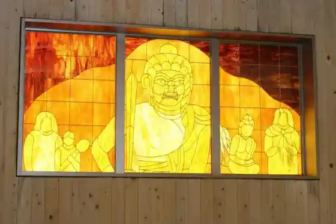
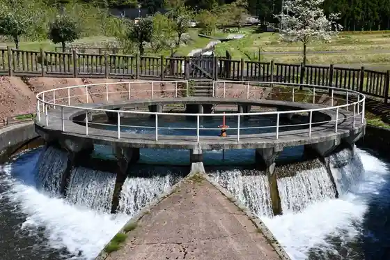
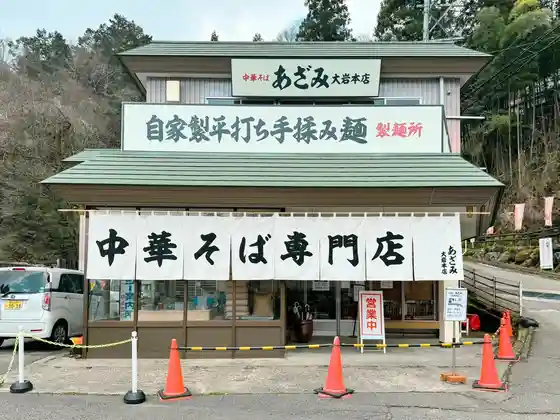
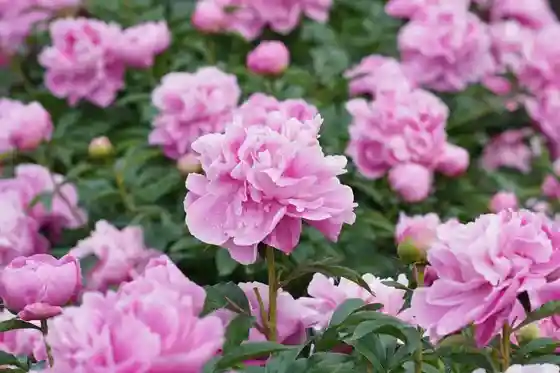

Oiwa Fudo Baths
Kamiichi, Toyama · 076-473-3622 · Official / source link

Shaku Izumi Tera Ento Bunsui So
Kamiichi, Toyama · Official / source link

Chuka Soba Senmonten Azami Oiwa Main Shop
Kamiichi, Toyama · 076-473-1480 · Official / source link

Yakuyo Shokubutsu Shido Center
Kamiichi, Toyama · 076-472-0801 · Official / source link

Oiwa Kawa Shinsui Park
Kamiichi, Toyama · Official / source link
Yado & Maruchisupesu (metate) Metate
Kamiichi, Toyama · 090-8807-6047 · Official / source link
(Okamikodomo no Ame to Yuki) Butai Moderu
Kamiichi, Toyama · Official / source link
Sengan Kei
Kamiichi, Toyama · Official / source link
Tsurugi Seishonen Ryoko Village (Baba Shimano Ei Ba) Tsurugiseishonenryokomura (Bambajimayaeijo)
Kamiichi, Toyama · 076-472-3080 · Official / source link
I Orihashi, I Orihashi Sagan Plaza
Kamiichi, Toyama · Official / source link
Ue Kyoden Chuo Park
Kamiichi, Toyama · Official / source link
Autumn Leaves no Baba Shima Shinrin Serapiirodo, Nakayama Sansaku Koyo no Bambajimashinrinserapiirodo,
Kamiichi, Toyama · Official / source link
Fukuichi
Kamiichi, Toyama · 076-472-6968 · Official / source link
Shiki Ryori Hana Nama
Kamiichi, Toyama · 076-472-6990 · Official / source link
Yumi no Sato Rekishi Bunka Kan
Kamiichi, Toyama · 076-473-8100 · Official / source link
Baba Shima So
Kamiichi, Toyama · 076-472-3080 · Official / source link
Nishida Art Museum
Kamiichi, Toyama · 076-472-4352 · Official / source link
Kobodaishi no Shimizu (Goma Do) Kobodaishi no Shimizu (Gomado)
Kamiichi, Toyama · 076-472-2505 · Official / source link
Ana no Tani no Reisui
Kamiichi, Toyama · 076-472-4711 · Official / source link
Ganmoku Yama Tateyama Tera
Kamiichi, Toyama · 076-472-0699 · Official / source link
Furusato Tsurugi Oya Nature Park Campground Oto Campground
Kamiichi, Toyama · 076-472-0123 · Official / source link
Kamiichi Tennen Onsen Arupusu Baths
Kamiichi, Toyama · 076-473-3272 · Official / source link
Oiwa Yamabi Ishidera
Kamiichi, Toyama · 076-472-2301 · Official / source link
Kamiichi Town Hall
Kamiichi, Toyama · 076-472-1111 · Official / source link